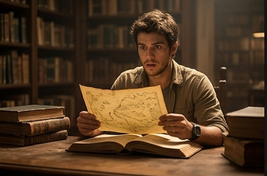
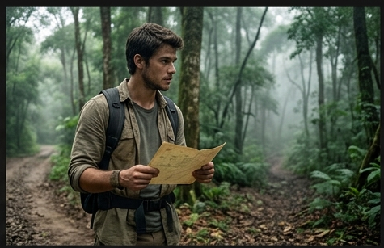
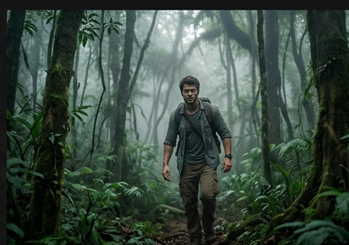
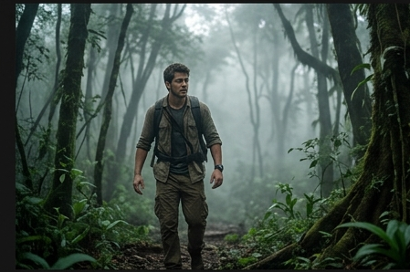

O mapa secreto
Essa história ocorre em 2011, no Brasil, Jefferson, um jovem aventureiro e escoteiro vivia normalmente, porém iria passar por um evento inusitado.

No dia 28 de maio de 2011, Lucas encontra um mapa misterioso dentro de um livro antigo da biblioteca onde costumava estudar, logo ele se vê com 2 escolhas:Ao chegar na floresta, ele encontra uma trilha coberta por névoa.

Do outro lado, Lucas vê uma criatura misteriosa observando-o.

Nas ruínas, há uma esfera brilhante sobre um pedestal.

A esfera mostra que o lugar está desaparecendo.

Ao voltar para casa, o mapa aparece completo.